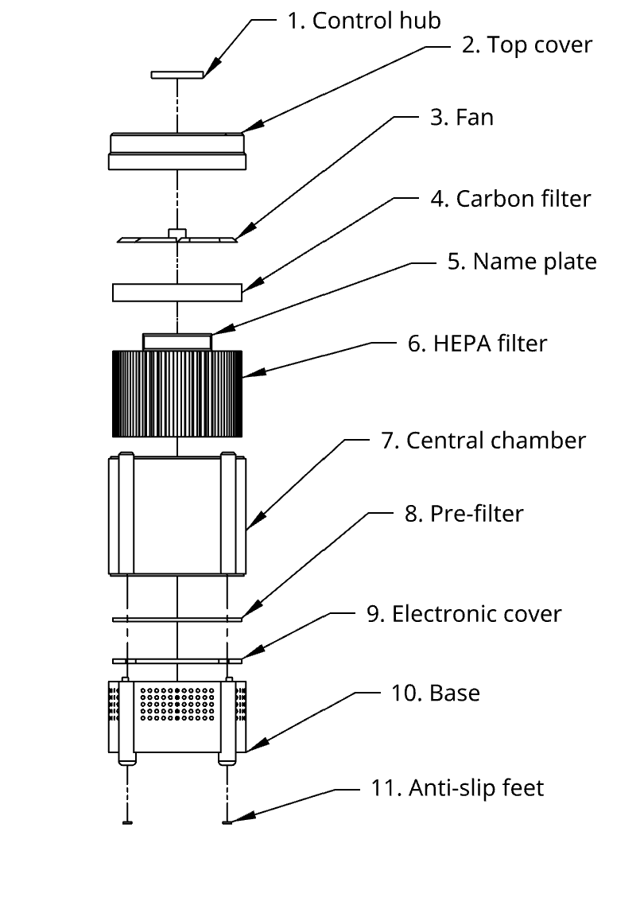
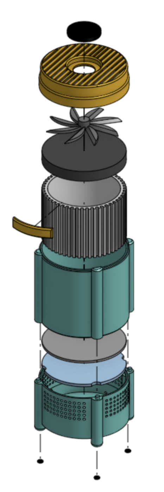

My Projects
Projects completed during my studies at Drexel University, 2023-2028.
Air Purifier
A product design project exploring the construction, components, and assembly of an air purifier.



Countdown Clock
A desk clock with an internal "life timer" that speeds up when a cigarette is dispensed.


Stained Glass Lamp
A lighting project exploring stained glass, craftsmanship, materiality, and the relationship between light and color.


Shady Leaves
A product design project exploring a plant shading system designed to help protect plants from excessive sunlight and UV exposure while integrating into an outdoor garden environment.